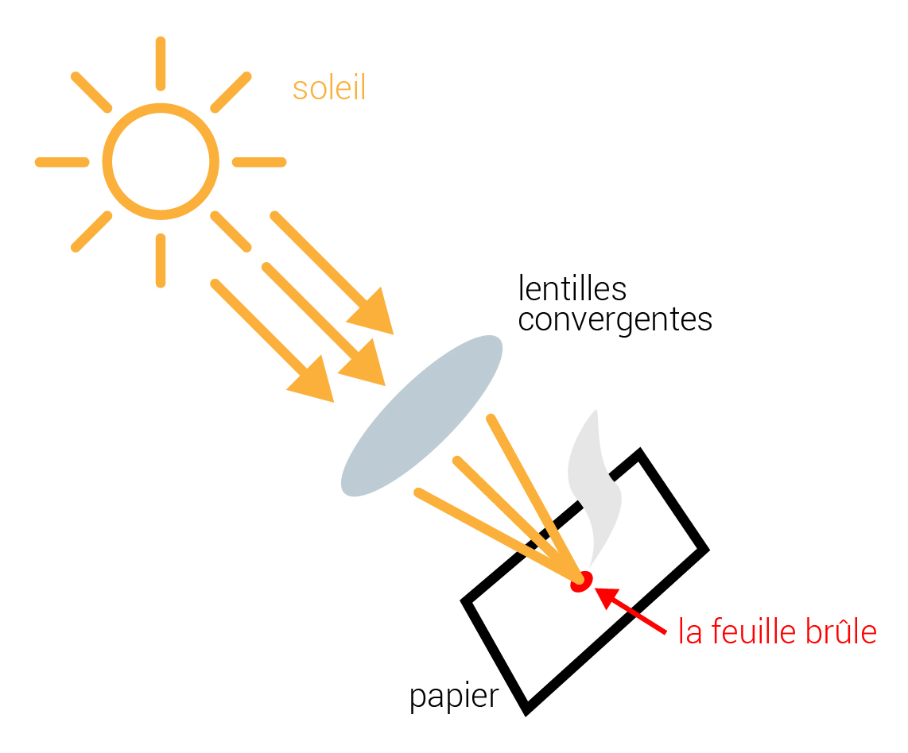
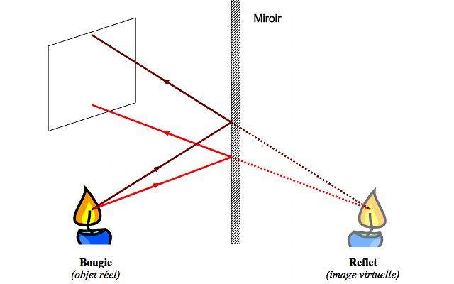

Les lentilles sont fabriquées dans un matériau transparent (verre ou plastique). On peut observer que toutes ces lentilles sont délimitées par deux surfaces lisses dont l’une au moins est une surface courbée. Elles sont également toutes symétriques par rapport à un axe appelé axe optique.
Les lentilles peuvent se classer en deux types :
En optique, un foyer est un point vers lequel convergent les rayons lumineux issus d'un point après leur passage dans un système optique (ex. lentille).
En éclairant une lentille convergente avec un rayon lumineux parallèle, nous pouvons concentrer la lumière en une petite tache pratiquement réduite à un point. Si nous plaçons une feuille de papier en ce point, elle s'enflamme. C’est ce que nous appelons le foyer d’une lentille.

En éclairant une lentille divergente avec un rayon lumineux parallèle, nous pouvons constater que le rayon lumineux est dévié lorsqu’il traverse la lentille.

Lorsqu'un objet lumineux est à une distance supérieure à la distance focale f, la lentille forme son image, renversée, à une certaine distance ; cette image peut être observée sur un écran.

Pour un œil qui regarde dans un miroir, tout se passe comme si les rayons issus de A(la bougie réelle) venaient d’un point fictif A’ (la bougie virtuelle)qui est le symétrique de A par rapport au miroir. L’œil (et le cerveau) étant conditionné à la propagation rectiligne de la lumière, il « croit » voir un objet en A’, en tous points identiques à A ; l’œil est trompé par le changement de marche dû à la réflexion sur le miroir. A’ est appelé image virtuelle du point A, car si on place un écran en A‘, bien sûr, il ne se passe rien car la lumière ne franchit jamais le miroir ! A chaque point de l’objet, le miroir fait correspondre un point image virtuel et l’ensemble de ces points images constitue l’image de l’objet. Nous pouvons donc déduire de ces observations qu’un miroir plan donne, d’un objet réel, une image virtuelle de l’objet symétrique par rapport au miroir.
